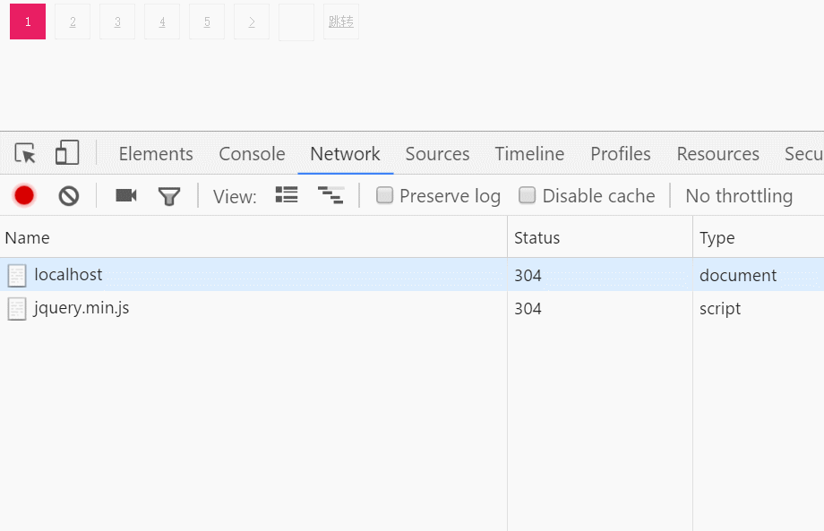

分页-pagination
下载该插件需先引入jQuery，再引入pagination组件
<script src="jquery.js"></script>
<script src="jquery.pagination.js"></script>
组件样式与功能分离，自定义样式（注：这里加样式是为了示例看的清楚，操作方便。）
当前是第页
HTML
<div class="M-box"></div>
Javascript
$('.M-box').pagination({
callback:function(api){
$('.now').text(api.getCurrent());
}
},function(api){
$('.now').text(api.getCurrent());
});
开启第一页和最后一页的按钮,并且内容可自定义。内容默认为1和总页数。（注：如coping为false，homePage和endPage无效。）
HTML
$('.M-box2').pagination({
coping:true,
homePage:'首页',
endPage:'末页',
prevContent:'上页',
nextContent:'下页'
});
总数据100条，每页显示5条，总页数为20页 如果配置了数据总数和当前一页显示多少条数据，总页数会自动计算，这种情况下再配置总页数无效。 （注：数据总数totalData和每页显示的条数showData必须同时配置，否则默认使用总页数pageCount。）
HTML
<div class="M-box1"></div>
Javascript
$('.M-box1').pagination({
totalData:100,
showData:5
coping:true
});
参数：jump，开启跳转到第几页，跳转按钮文本内容可修改。（如果超出最大页数会变成总页数的值）
HTML
<div class="M-box3"></div>
Javascript
$('.M-box3').pagination({
pageCount:50,
jump:true,
coping:true,
homePage:'首页',
endPage:'末页',
prevContent:'上页',
nextContent:'下页'
});
动态修改总页数，初始化时3页，动态修改为20页
HTML
<div class="M-box4"></div>
Javascript
$('.M-box4').pagination({
pageCount: 3, //初始化时总页数3页
callback:function(api){
api.setPageCount(20);//动态修改总页数为20页
}
});

有朋友对ajax请求带参数分页有疑问，因为不是服务器环境，就用图做个示例。
HTML
<div class="M-box4"></div>
Javascript
$('.M-box4').pagination({
pageCount: 50,
jump: true,
callback:function(api){
var data = {
page: api.getCurrent(),
name: 'mss',
say: 'oh'
};
$.getJSON('http://localhost:3000/data.json',data,function(json){
console.log(json);
});
}
});
api接口
| 方法 | 参数 | 说明 |
| getPageCount() | 无 | 获取总页数 |
| setPageCount(page) | page：页数 | 设置总页数 |
| getCurrent() | 无 | 获取当前页 |
| filling() | 无 | 填充数据，参数为页数 |